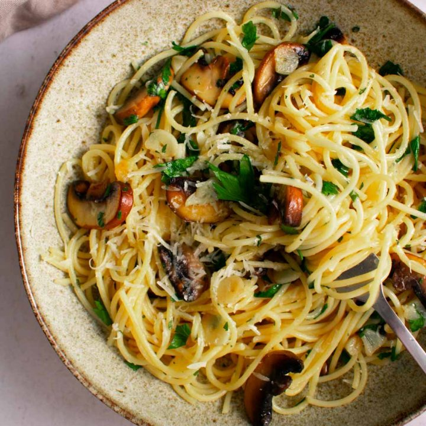

Pastaoil
Home

How to: Make a simple yet tasty pasta dish!
I love making pasta dishes, because they are super versatile. Especially when you add Olive Oil to the mix!
Ingredients (Serves 4):
- A Box Of Your Favorite Pasta.
- 2 Ounces Of Olive Oil
- 3 Cloves Minced Garlic, Minced
- 3 Ounces Of Spinach
- ~6 Baby Bella Mushrooms, Thinly Sliced
- Half A Large Red Pepper, Cubed
- 1 Ounce Of Italian Parsley, Minced
Step-by-Step:
- Boil a pot of water on hight heat, add pasta, a splash of olive oil, and a pinch of salt.
- Cook until just past al dente, remove from heat.
- Add olive oil to a non-stick pan, sautee mushrooms and peppers until slightly brown.
- Add minced garlic and spinach to pan, until garlic slightly browned and spinach is beginning to wilt.
- Add pasta in pan, along with a half ounce of the pasta water and an ounce of olive oil.
- Add italian parsley and stir together.
- Serve in pasta dish!